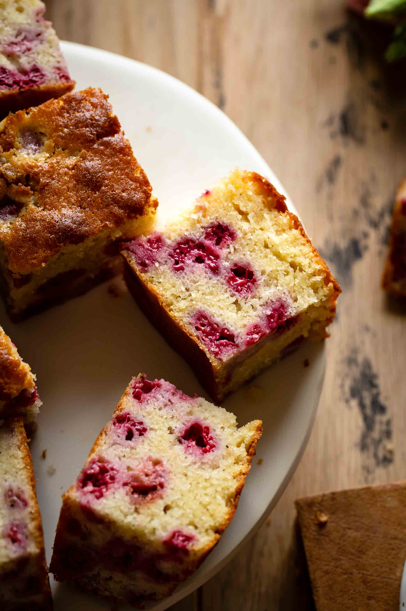

Delicious raspberry loaf cake recipe

- 1 teaspoon soft margarine
- 1 cup superfine sugar
- 3/4 cup unsalted butter
- 3 large eggs
- 1/2 teaspoon vanilla extract
- 5 ounces fresh raspberries
- Preheat the oven to 350 degrees F (175 degrees C). Grease an 8x4-inch loaf tin with soft margarine and set aside.
- Cream superfine sugar and butter together with a paddle attachment of a free-standing electric mixer on medium-high speed until light and fluffy.
- Whisk eggs and vanilla extract together in a separate bowl until just mixed; do not over-whisk. Beat gradually into the butter mixture until well incorporated. Sift in flour and baking powder, bit by bit, folding after each addition. Set batter aside.
- Puree raspberries, confectioners' sugar, and lemon juice in a food processor until smooth. Strain through a fine-mesh sieve into a bowl. Separate half of the cake mix into a different bowl and stir the coulis through.
- Put alternating dollops of the raspberry and vanilla batters into the prepared loaf tin using a small ice cream scoop. Swirl both sets of dollops together slightly using the blunt end of a skewer.
- Bake in the preheated oven until the top of the cake is golden brown and risen and a toothpick inserted into the center comes out clean, about 40 minutes. Let cool in the tin for 5 to 10 minutes. Run a table knife around the edges of the tin and remove the cake, leaving to cool completely on a wire rack.